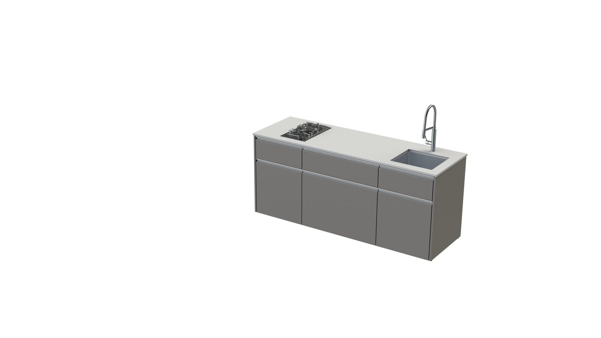
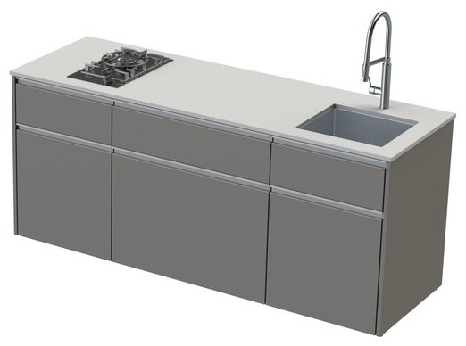
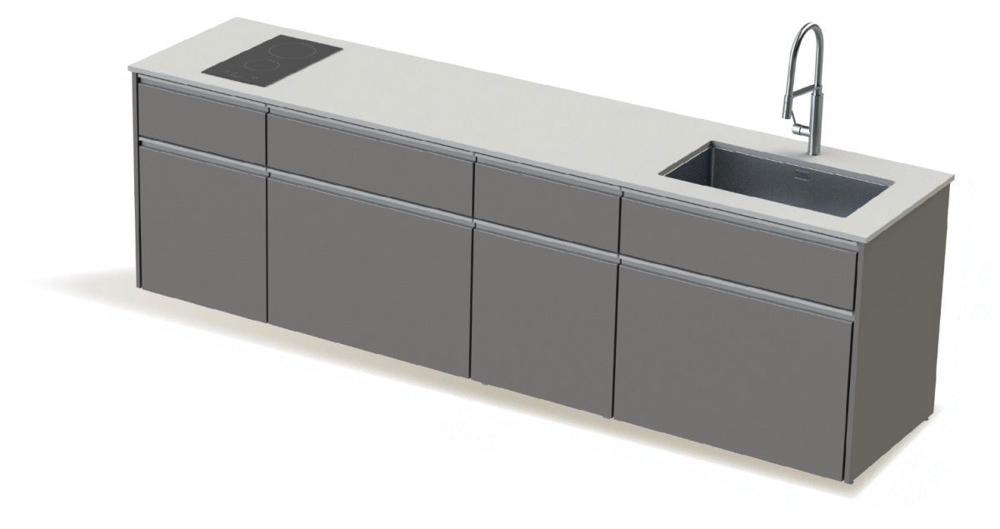
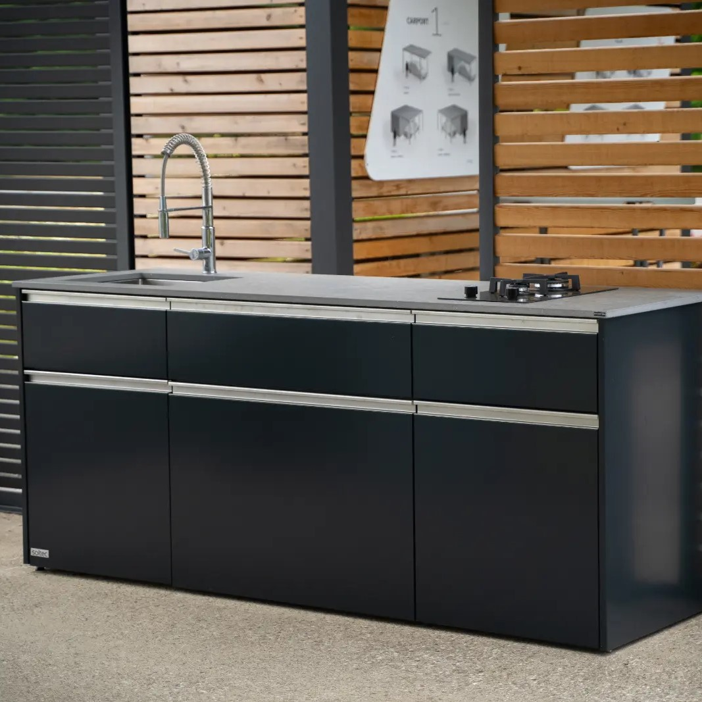
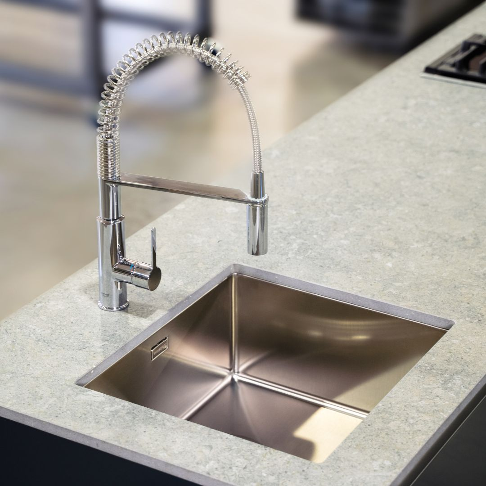
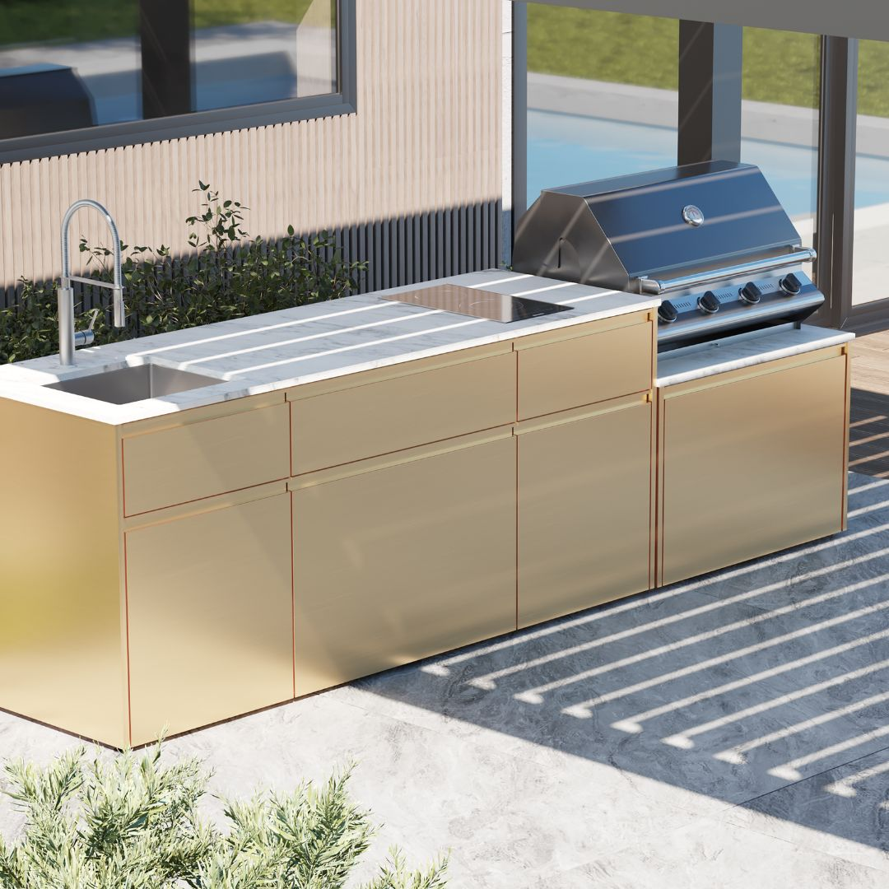
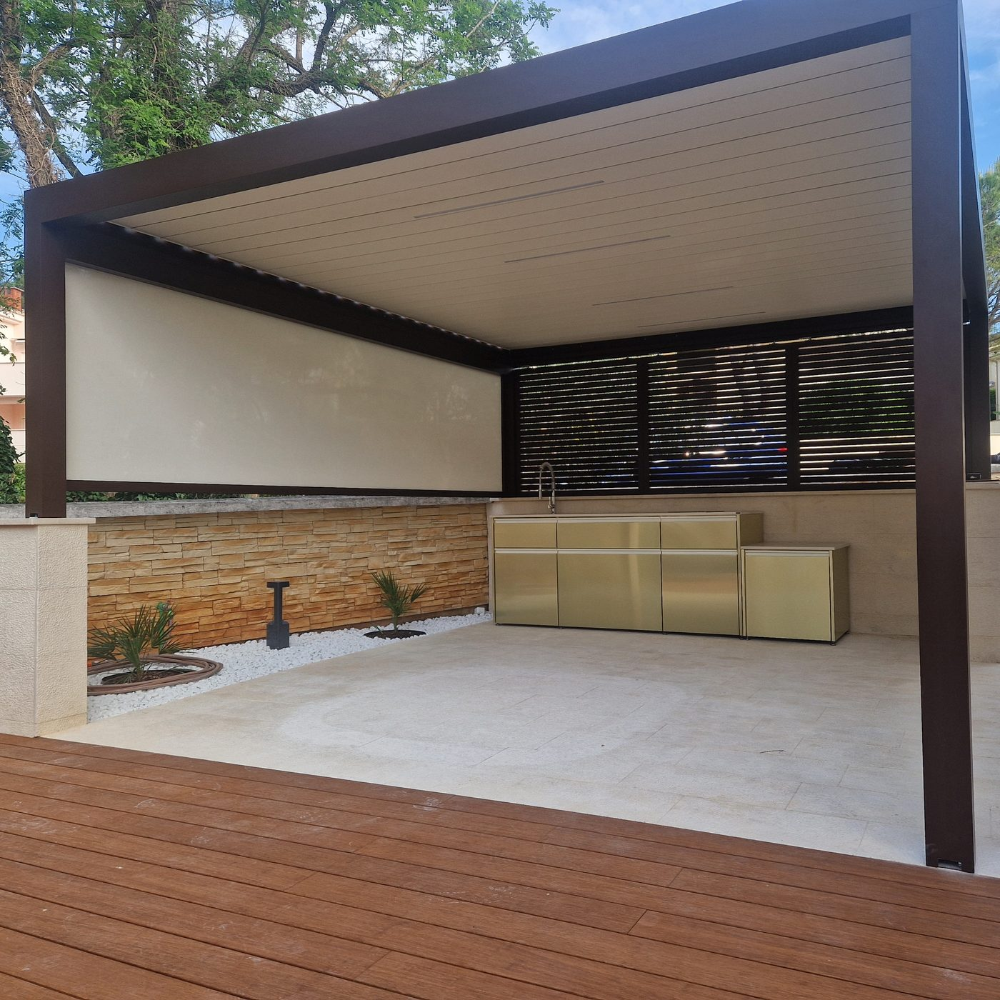

Chef · pracovná výška 92 cm
303 × 70 × 92 cmChef Grand 3.0
Kuchynský modul s najdlhšou pracovnou plochou.

Hliník, ktorý nehrdzavie, obklad, ktorý sa nekrúti od vlhka, a dva centimetre hrubá kamenná doska. Zostavu poskladáme podľa toho, čo naozaj varíte, od grilu po drez a chladničku.
Modely
Modely Chef spájajú pracovnú plochu, drez a varnú zónu v jednom kuchynskom module. Nižšie modely Station sú určené pre samostatný gril a môžu stáť pri module Chef alebo samostatne.

Kuchynský modul s najdlhšou pracovnou plochou.

Kompaktnejší kuchynský modul s pracovnou a varnou zónou.

Samostatná stanica pre gril s väčšou odkladacou plochou.

Najmenšia samostatná základňa pre gril.
Základ, ktorý zostáva vonku
Kamenná doska hrubá dva centimetre má po obvode hranu, ktorá vodu odvedie dolu a nie do zásuviek. Zásuvky sa dovierajú samy a nebuchnú. Vonku môže zostať všetko, aj cez zimu.
Výbava modelov Chef
Plynová alebo indukčná doska, chladnička, drez s batériou, LED osvetlenie, držiak plynovej fľaše, výsuvný kôš na triedenie odpadu, prípojka vody a elektriny alebo ochranný kryt.
Čo v nej je
Toto je rad Chef v najdlhšej zostave. Varná doska, drez aj chladnička sú na výber — konštrukcia, obklad a doska sú rovnaké pri každej veľkosti.

1 2 3 4 5 6 7 8 9 10 11 1Plynová alebo indukčná doska 2Okraj zadrží rozliatu vodu 3Kamenná doska 2 cmnesaje vodu 4Voda sa dnu nedostane 5Zásuvky s tichým dovieranímBlum 6Nôžky dorovnajú do 2 cm 7Drez a výsuvná batéria 8LED osvetlenievoliteľné 9Hliníkové úchytky 10Chladničkavoliteľná, 104 + 14 l 11Hliníkový obklad 10 rokovzáruka na hliníkový obklad aj kamennú dosku
Hliník a nerezľahká konštrukcia, ktorá vydrží roky vonku
Odolá počasiuslnko, dážď aj mráz, kuchyňa ostáva vonku
10 rokovzáruka na hliníkový obklad aj kamennú dosku
Hliník a nerezľahká konštrukcia, ktorá vydrží roky vonku
Odolá počasiuslnko, dážď aj mráz, kuchyňa ostáva vonku

Vonkajšie kuchyne · Soltec
Doska z kameňa, na ktorej nezostávajú škvrny a ktorá znesie horúci hrniec. Voda z nej steká po hrane dolu, nie do zásuviek. Varíte na plyne alebo na indukcii, podľa toho, čo máte radšej.
ALU
konštrukcia a hliníkový obklad do exteriéru
20 mm
kamenná doska, voda steká po hrane
Inšpirácia Soltec
Ukážky modulov, farebných kombinácií a kuchýň pod prestrešením od výrobcu Soltec.

Vonkajšia kuchyňa Soltec s hliníkovým obkladom

Zastrešené sedenie s osvetlením

Kuchyňa na krytej terase, pripravená na celú sezónu
Samostatné moduly zladené s priestorom terasy
Antracitová šedá RAL 7016 pri bazéne

Kuchyňa pod bioklimatickou pergolou
Čo je v cene
Príprava miesta
Nechceme, aby ste kopali skôr, než je jasné, kde bude drez a kde gril. Ide sa opačne: najprv kuchyňa, potom prípojky. Čo netreba, to sa neťahá.
Prídeme k vám, zmeriame plochu a dohodneme sa, na ktorú stranu sa bude variť a kam sa majú otvárať dvierka.
Dostanete pôdorys kuchyneChef alebo Station, gril alebo varná doska, chladnička, drez, svetlá. Poskladáme to tak, ako naozaj varíte.
Dostanete zoznam dielov aj s cenouKeď je kuchyňa odsúhlasená, povieme presne, kam má prísť elektrina, voda, odpad alebo plyn.
Dostanete nákres pre elektrikára aj vodáraNa stiahnutie
Katalóg je od výrobcu Soltec, v pôvodnom jazyku. Čokoľvek z neho radi vysvetlíme po slovensky.
Katalóg sa neotvoril? Napíšte na obchod@koverta.sk a pošleme vám ho e-mailom.
Časté otázky
Nenašli ste odpoveď? Zavolajte nám, poradíme aj bez záväzku.
+421 948 482 266Cenu určuje model Chef alebo Station, rozmer a zvolená výbava, napríklad drez, varná doska, chladnička alebo LED. Napíšte nám, čo chcete používať a koľko máte miesta; cenu pripravíme z dodaných podkladov alebo po bezplatnom zameraní, ak je potrebné.
Kuchyňa je stavaná na to, aby stála vonku po celý rok. Nič sa nemusí na zimu odnášať do garáže. Dosku a spotrebiče stačí čistiť podľa návodu, ktorý k nim dostanete.
Nie. Kuchyňa je samostatný exteriérový systém; pergola alebo pevné prestrešenie je ďalšia časť návrhu. Ak chcete oboje, zosúladíme rozmer, farbu a prípojné body v jednom projekte.
Rovnú spevnenú plochu a prípojky podľa vybranej výbavy. Elektrinu potrebuje indukčná doska, chladnička alebo LED; pri dreze sa pripravuje voda a odpad. Presné body zakreslíme až po odsúhlasení zostavy.
Chef Grand a Chef Classic sú kuchynské moduly v pracovnej výške, v ktorých si rozložíte drez, varnú dosku a pracovnú plochu. Station Compact a Mini sú nižšie samostatné grilovacie jednotky; môžu stáť vedľa Chef aj osobitne.
Vonkajšia kuchyňa je celá z materiálov, ktoré znesú dážď, mráz aj slnko. Kuchynská linka z obývačky vonku vydrží jednu sezónu, táto desaťročia.
Áno, rozmer a farebné vyhotovenie vieme navrhnúť k existujúcemu priestoru. Kuchyňa môže stáť samostatne; prípadné stavebné napojenie na staršiu konštrukciu potvrdíme až po obhliadke.
Pre modely Chef výrobca uvádza plynovú alebo indukčnú dosku, chladničku, LED, drez, držiak plynovej fľaše, výsuvný kôš na odpad, prípojku vody a elektriny a ochranný kryt. Station Mini alebo Compact doplní zostavu ako samostatná grilovacia jednotka.
Cenová ponuka zadarmo
Podľa toho, či grilujete alebo naozaj varíte, navrhneme zostavu aj rozmer. Zameranie je zadarmo.
Prišiel nám v poriadku. Ozveme sa do jedného pracovného dňa. Takto to bude pokračovať:
Fotky, ktoré ste vybrali, pošlite prosím e-mailom. Formulár ich k nám neprenesie. Poslať fotky na obchod@koverta.sk
Súri to? +421 948 482 266 · obchod@koverta.sk
Poslať ten istý dopyt aj e-mailom Ak by k nám formulár nedoručil, e-mail dôjde vždy.
Spojenie zlyhalo, takže dopyt k nám nedošiel. Nič ste nestratili, všetko vyplnené vám otvoríme v e-maile jedným klikom:
Otvoriť e-mail s dopytom Odíde na obchod@koverta.sk aj s tým, čo ste vyplnili.
Alebo rovno zavolajte: +421 948 482 266